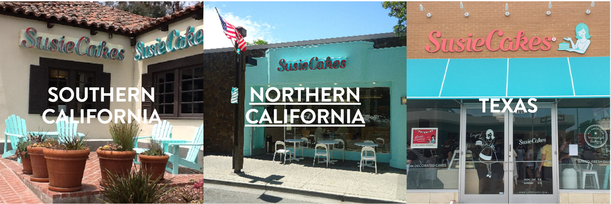

Our classic treats are made daily by in-house bakers, using the freshest & finest ingredients. Come visit us for delicious, sentimental sweets a friendly, old-fashioned neighborhood experience.
SusieCakes’ founder, Susan Sarich, grew up in Chicago, where she was called Susie by her two beloved grandmothers, Mildred and Madeline. Every day Susie would come home from school to enjoy her grandmothers’ company over a glass of milk and a fresh baked treat. This daily baking ritual and special time together in the kitchen left a lasting impression. When Susie grew up to become Susan and moved to the West Coast, she brought along her grandmothers’ carefully recorded recipes on handwritten 3×5 cards. The pure and simple connection those recipes fostered helped Susan form SusieCakes bakeries to share her experience with others. Through SusieCakes, Susan honors Mildred and Madeline: both in her dedication to their baking traditions, and her commitment to providing women with progressive careers in the food & hospitality industry.
Would you like to place an order or have a special request?
your nearest location
tell susie
Have feedback about our products or service?
Please contact Susie directly at:
susie@susiecakes.com
real estate enquiries
Know a great location for the next SusieCakes?
Please send information to:
realestatecakes.com
